L1 · Jim's residence
Jim's home below ground: sector 1 of L1, 24 m under the plain and 16 m of soil, which stop the radiation, hold the air in and keep the warmth steady. It is the safest place on Mars to live. The front rooms stand behind 28.8 m of glass onto the atrium's terraces and gardens; behind them runs a street lit from above, and across it the master suite down wraps round a moss garden.
 L1-02The family room
L1-02The family room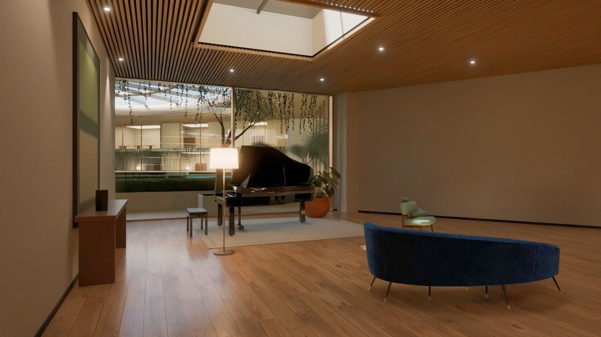
L1-01The music room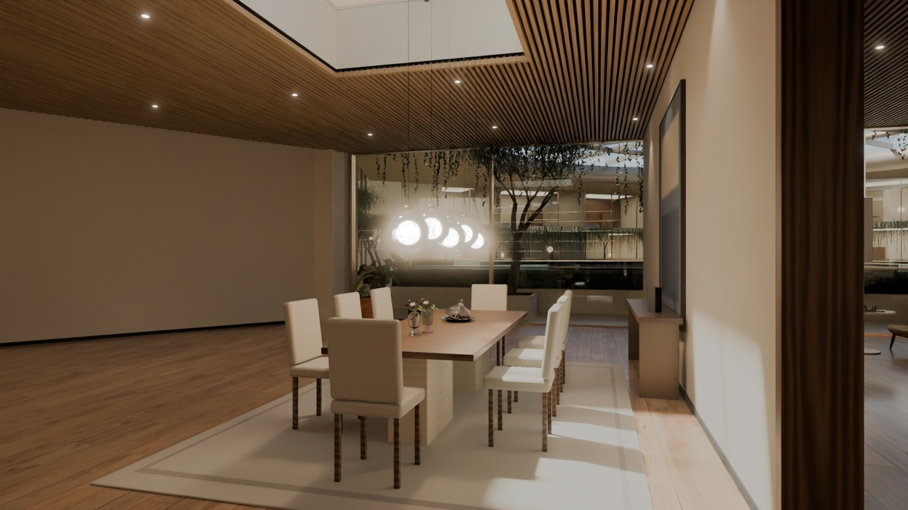
L1-03The dining room and the bar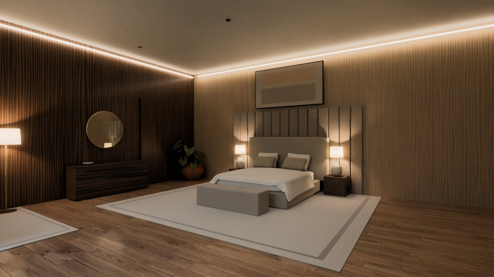
L1-06 to L1-09The master suite down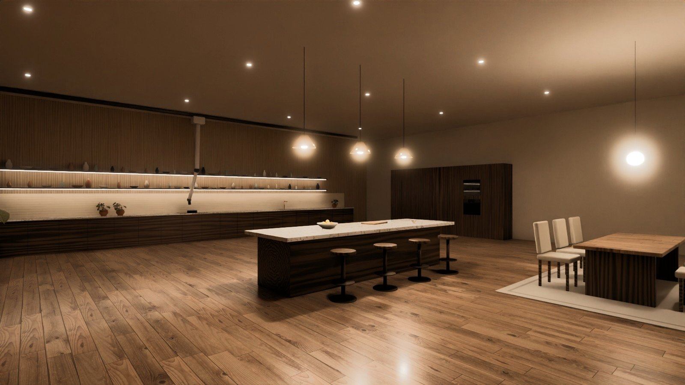
L1-05, L1-10 to L1-16The kitchen, the robot bay and the stores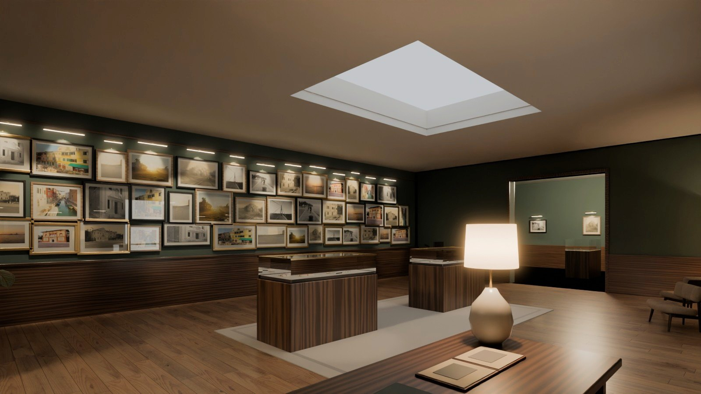
L1-14The memory rooms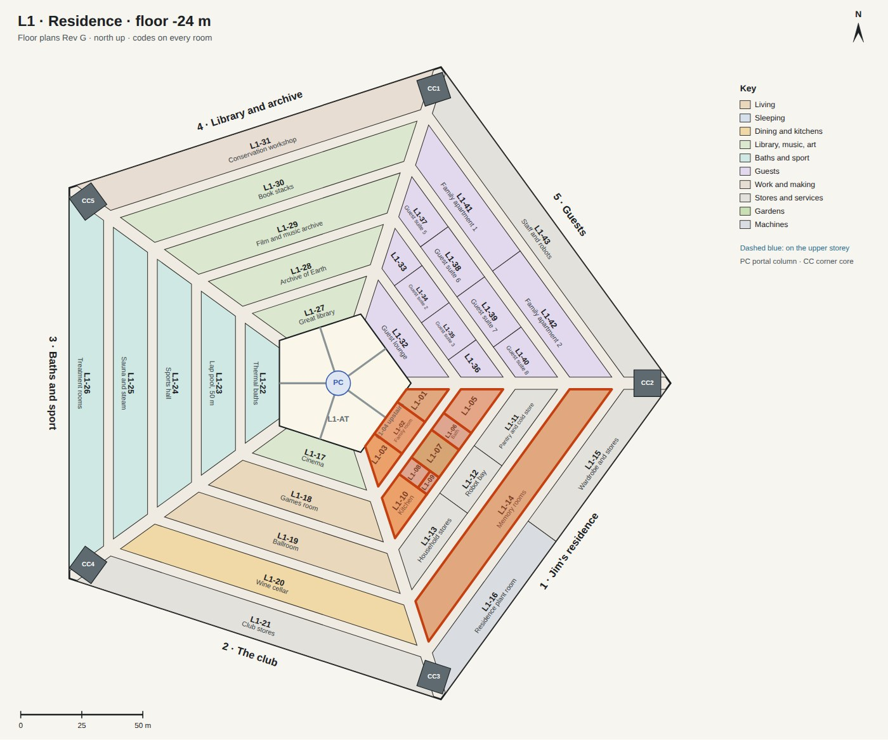
The family room
The room Jim lives in every evening: a fire to sit by, his books, a game of chess in the light from the atrium, a film on the screen over the hearth. It is the heart of Jim's home below ground, with the music room on one side, the dining room on the other, and doors behind to the street and the master suite.

| Size | 16 m along the glass, 13.9 m deep and 3.8 m high: 224 m². Jim's study (L1-04) is the storey above. |
|---|---|
| Made of | Oak boards; an oak-slat ceiling on black felt; a chimney breast of travertine; walnut bookcases lit from within; bronze mullions and doors. |
| In it | A curved velvet sofa and two chairs round a travertine table, a silk pouf, a chess table by the glass, six bookcases, and the hearth: a long fire of lit mist, since there are no open flames in air with 27% oxygen. A screen hangs above it. |
| Light | Daylight from the atrium through the glass; three skylights with sky ceilings; downlights in the slats; a light under every shelf; lamps. |
| Next to | The music room and the dining room through cased openings; the terrace in front; the street behind. |
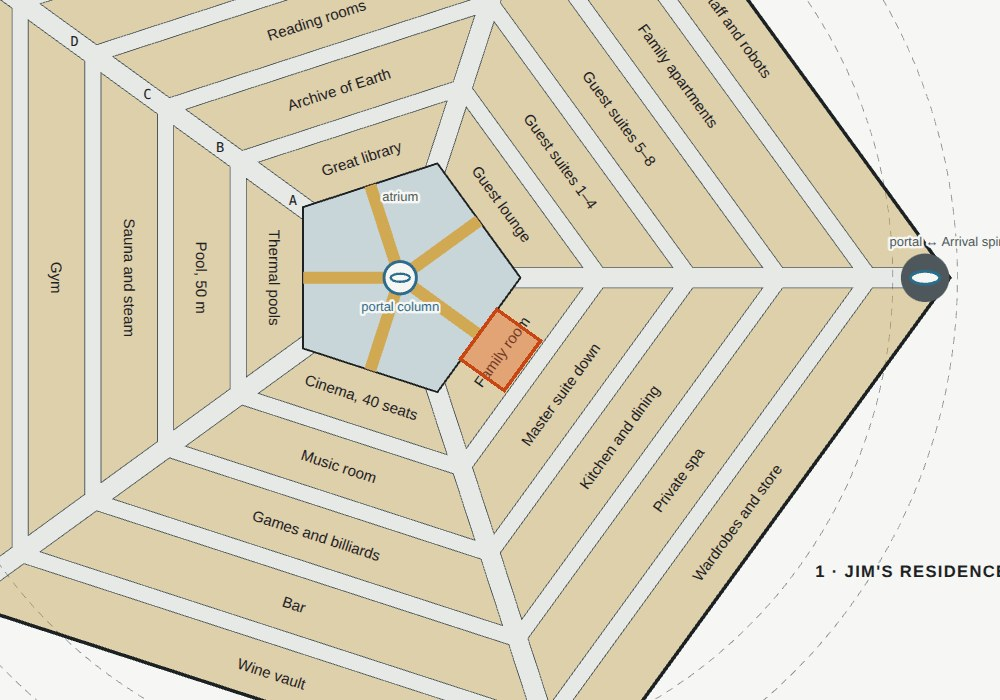
The music room
Where Jim plays: a concert grand by the glass, so that he plays looking out at the atrium, and a wall of records at the far end to listen to on a turntable and two tall speakers, from a pair of armchairs.
| Size | 6.4 m along the glass, widening to 16.5 m at the back wall, 13.9 m deep, 3.8 m high: 161 m². |
|---|---|
| Made of | Oak boards and an oak-slat ceiling, as in the family room; walnut; wool rugs. |
| In it | A grand piano 2.1 m long on a rug by the glass; a velvet sofa and two green chairs to listen from; a walnut console 7.2 m long full of records, with a turntable and an amplifier on it and a tall speaker at each end; two cognac armchairs and a reading lamp; two bookcases; paintings. |
| Light | The glass and a skylight over the piano; downlights; a floor lamp by the piano and lamps by the chairs. |
| Next to | The family room, through a cased opening. |
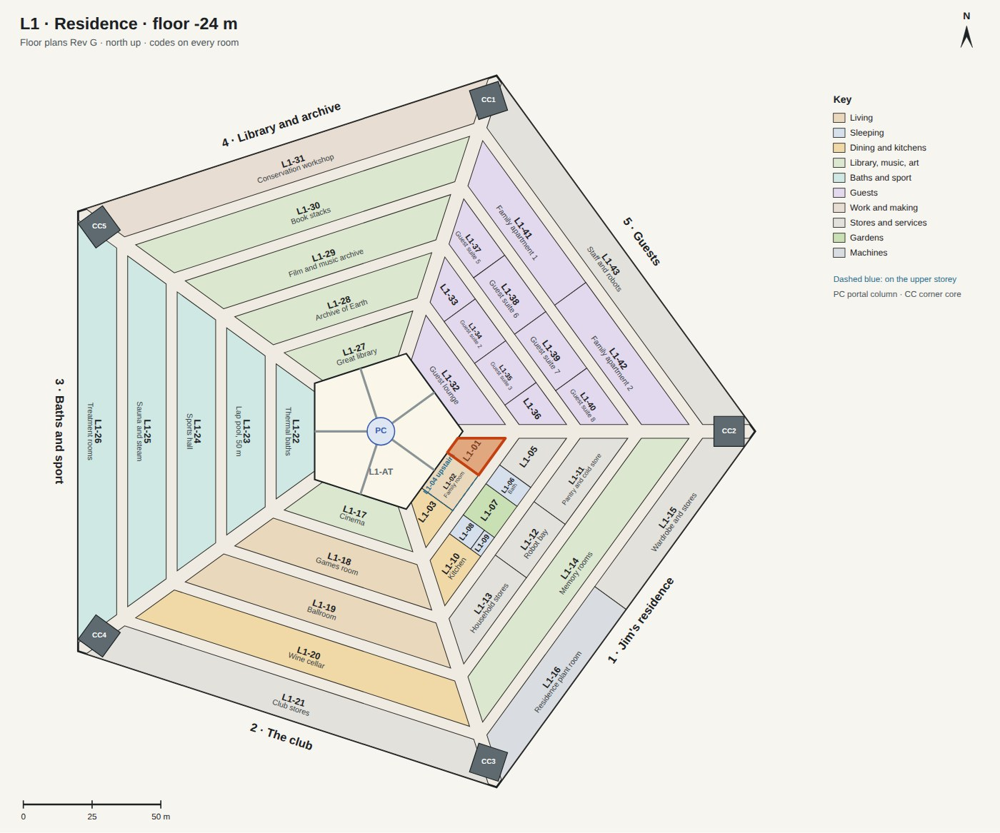
The dining room and the bar
Dinner for eight by the glass, and a drink after at the bar at the back of the room.
| Size | 6.4 m along the glass, widening to 16.5 m, 13.9 m deep, 3.8 m high: 161 m². |
|---|---|
| Made of | Oak; a walnut table on travertine bases; marble; an antique mirror; brass. |
| In it | The table for eight with linen chairs and five glass globes on cords over it; a sideboard under a painting; the bar: bottles on four bronze shelves in front of an antique mirror, a walnut counter with a marble top and a brass foot rail, four leather stools, three glass pendants. |
| Light | The glass and a skylight; the globes over the table; the shelves of bottles lit from below them. |
| Next to | The family room, through a cased opening; the kitchen (L1-10) is behind, across the street. |
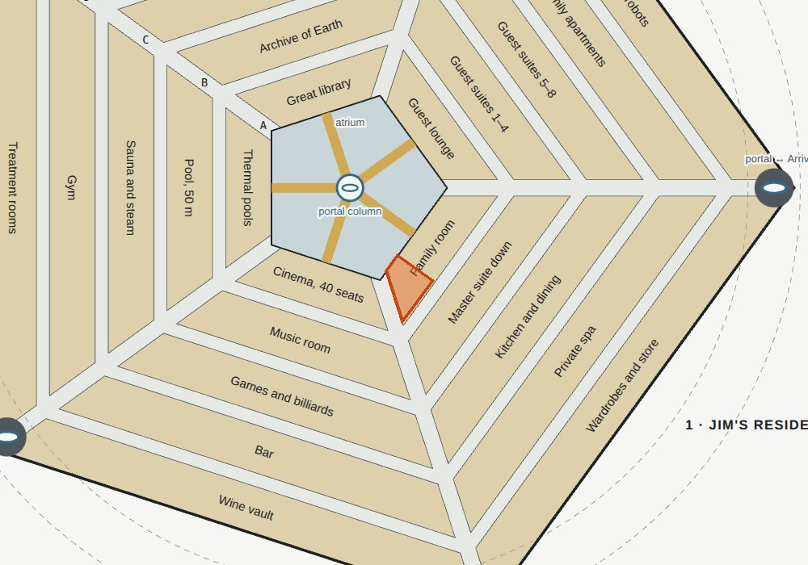
The master suite down
Where Jim sleeps most nights. Below ground the radiation is lowest: sleeping here and spending about six hours a day in the Crown keeps his dose near 20 mSv a year. The suite wraps round a moss garden open to a sky ceiling, which brightens with the morning and dims to stars at night.
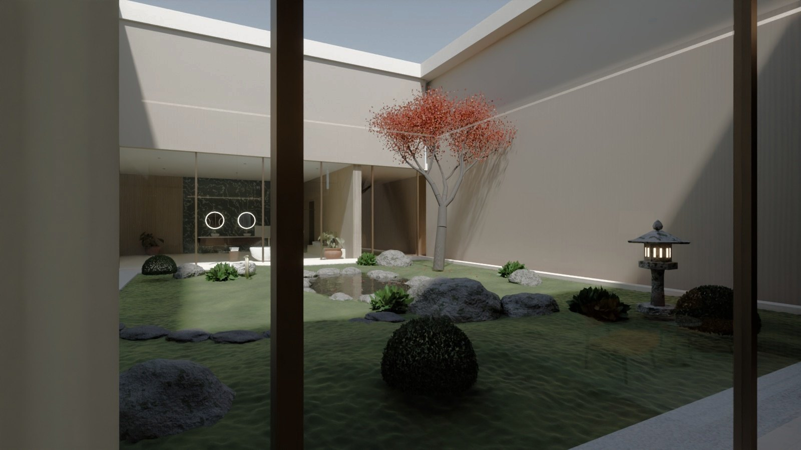
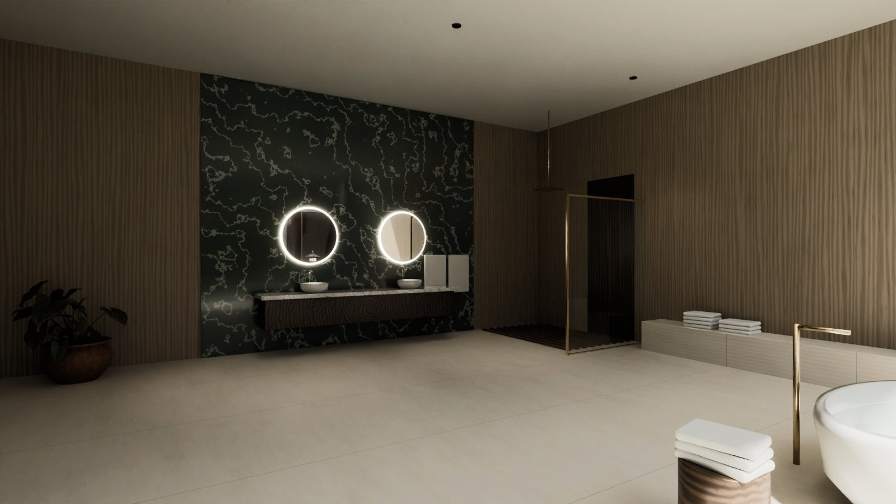
| Size | 434 m² in all: the bath (L1-06) 119 m², the moss garden (L1-07) 196 m² and 8 m high, the bedroom (L1-08) 81 m² and the dressing room behind it (L1-09) 38 m². The bath and the bedroom each have a glass wall onto the garden. |
|---|---|
| Bedroom | The bed faces the garden, with an upholstered headboard wall in vertical channels; walnut and pale oak; nightstands and lamps, a bench, two chairs by the glass, a dresser under a round mirror, sheer curtains. |
| Bath | A stone tub facing the garden; a double vanity on a wall of green marble, with round mirrors lit from behind; a walk-in shower with a rain head and a teak floor; travertine underfoot. |
| Garden | Moss in cushions round a pond with maple leaves floating on it; a Japanese maple; a stone lantern that glows at night; a water basin fed by a bamboo spout; ferns, clipped box, stepping stones; gravel along the glass. |
| Next to | The street in front, the family room across it; the laundry (L1-05) at one end and the kitchen (L1-10) at the other. |
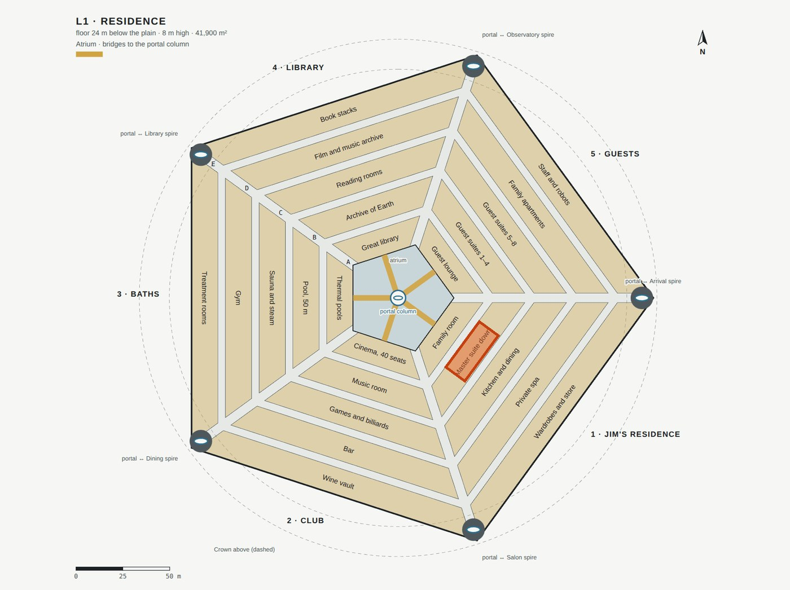
The kitchen, the robot bay and the stores
Round and behind the suite: the kitchen across the street from the dining room, where robots cook and Jim can too; the laundry; the pantry, the robot bay and the household stores; the wardrobes and the residence's plant room.
| Rooms | Ring B: L1-05 Laundry and linen, L1-10 Kitchen · ring C: L1-11 Pantry and cold store, L1-12 Robot bay, L1-13 Household stores · ring E: L1-15 Wardrobe and stores, L1-16 Residence plant room |
|---|
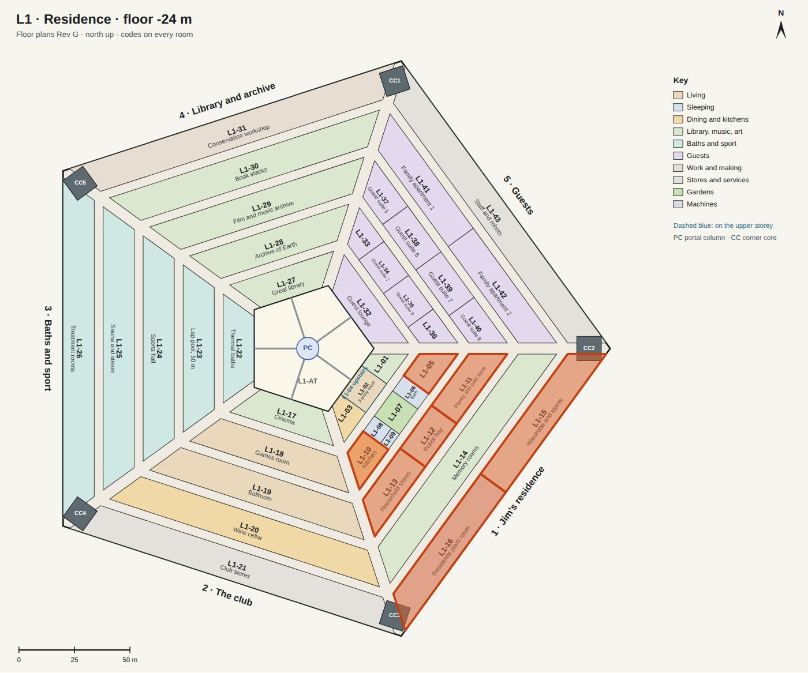
The memory rooms
Jim's keepsakes from Earth: family photographs, letters and the things he brought from home, in a suite of quiet rooms along ring D. Here he records his memoirs, and visiting family find the family's history.
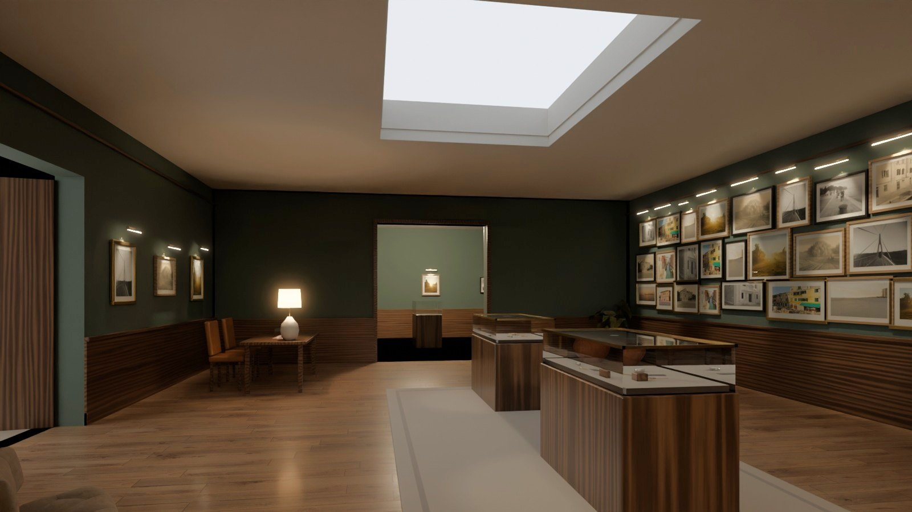
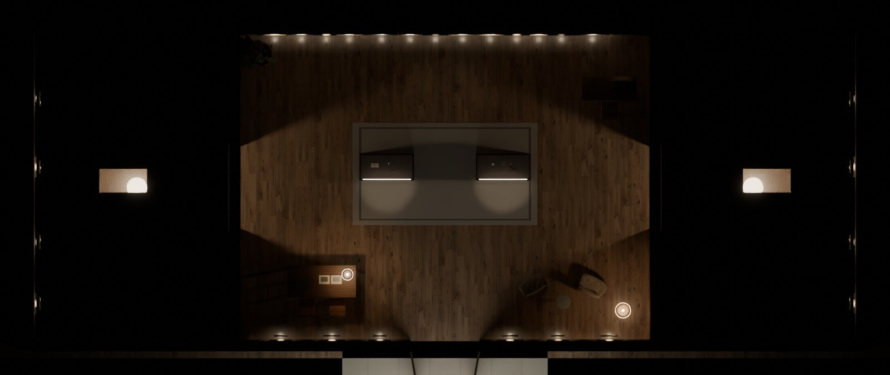
| Size | All of ring D of Jim's residence, a suite of rooms; the gallery of photographs in the middle is 12 m by 9 m and 3.6 m high. |
|---|---|
| Made of | Walls of deep green over a walnut dado, oak boards, brass picture lights, glass cases on walnut stands. |
| In it | Photographs of the places of Jim's life hung close in three rows; two cases of keepsakes (letters tied with a ribbon, a pocket watch, spectacles, a compass, a key, a medal); a reading table with the albums; two armchairs; the desk where he records his memoirs, with a microphone and a screen. |
| Light | A sky ceiling over the middle of the room; a brass light over the photographs; spots on the cases; lamps. |
| Next to | The letters room and the family's history on either side, through open doorways; the street in front. |
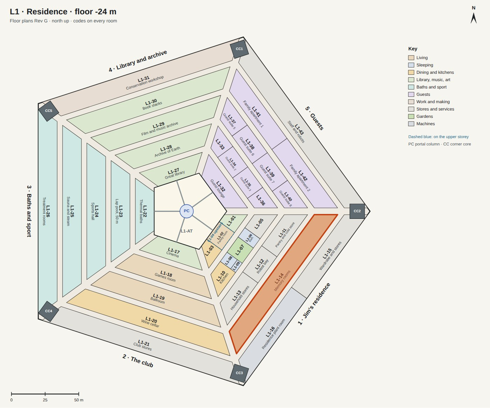